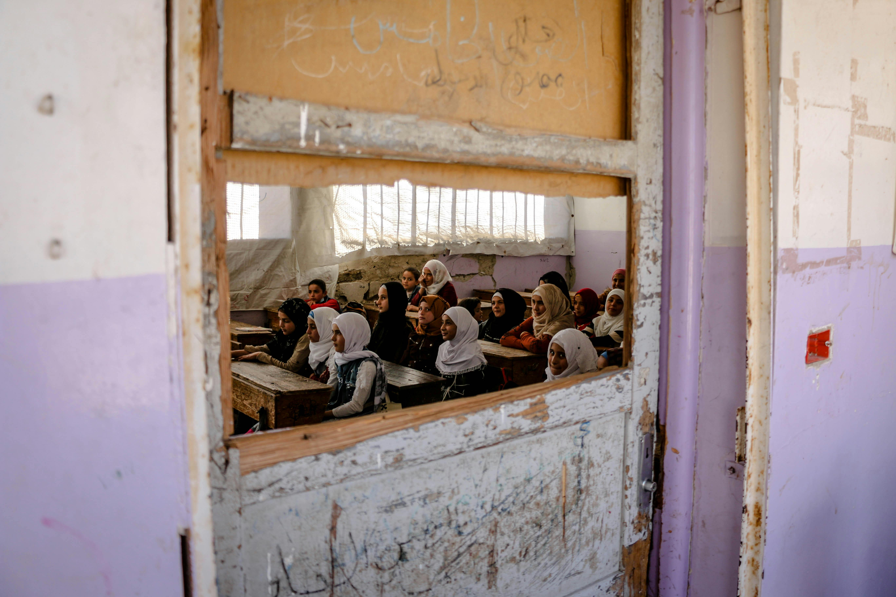
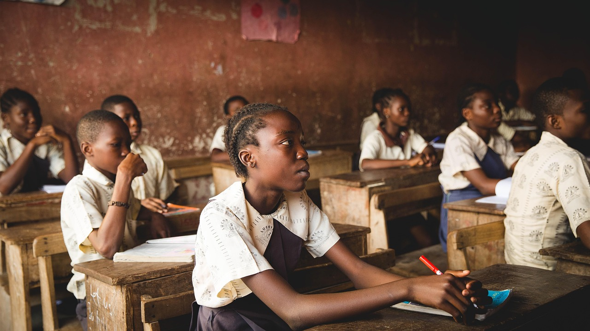
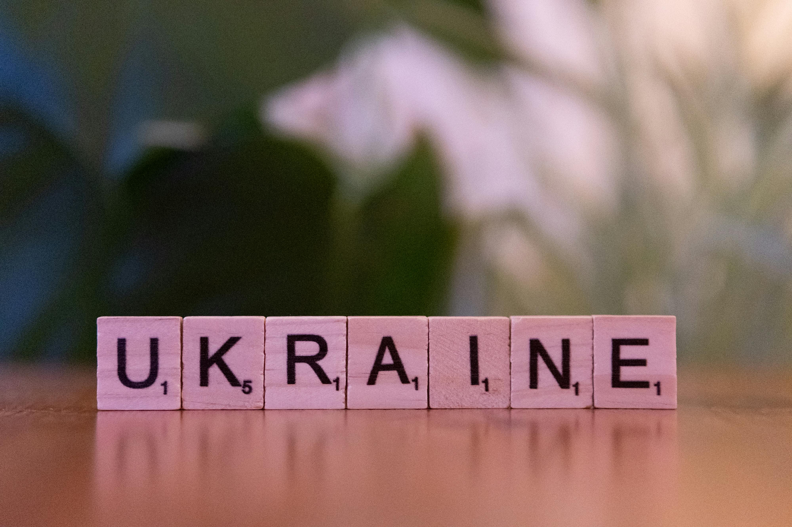
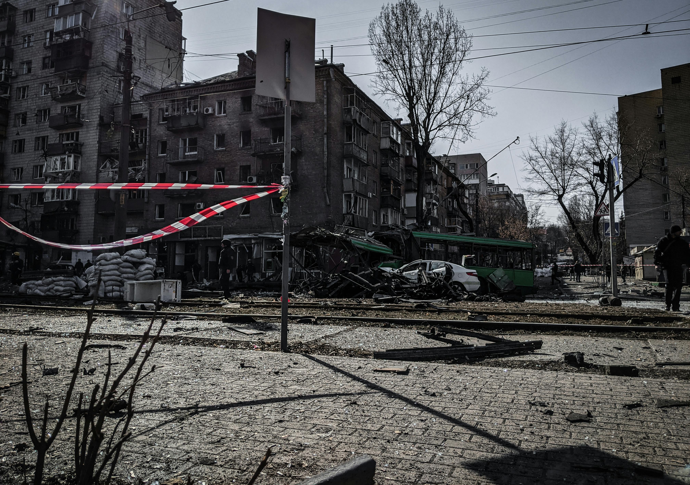

Bridging Education Gaps in Conflict Zones

Education in Conflict Zones: A Pathway to Peace and Opportunity
Education is a fundamental right, yet millions of children in conflict zones are denied access to learning due to war, displacement, and political instability. Ensuring that these children have access to quality education is essential for rebuilding societies, fostering peace, and breaking the cycle of poverty and violence.
1. Displacement and Infrastructure Destruction
Wars and natural disasters displace millions of children, forcing them to flee their homes and schools. As a result, schools are often destroyed or repurposed as shelters, leaving students without safe learning environments.
2. Shortage of Teachers and Resources
Conflict areas face a severe shortage of trained educators, textbooks, and basic school supplies. Many teachers flee the violence, while others work in unsafe conditions, limiting educational opportunities for students.
3. Psychological Trauma and Its Impact on Learning
Children exposed to war and violence often experience psychological trauma, which can impair their ability to focus and learn. Education systems in these regions must integrate psychosocial support to help students cope with their experiences.
4. Discrimination and Exclusion
Marginalized groups, including girls, refugees, and students with disabilities, face even more significant barriers to Education. It is crucial to ensure inclusive policies and safe spaces for all learners.

Innovative Solutions to Bridge the Education Gap
1. Mobile and Temporary Schools
Organizations are establishing mobile classrooms, temporary schools, and learning centres in refugee camps to provide continuous Education. These flexible models ensure that children receive basic Education even during crises.
2. Digital and Remote Learning
E-learning platforms, radio programs, and mobile apps enable students to access Education without needing physical schools. Initiatives like UNICEF’s Learning Passport provide digital curricula for displaced children.
3. Teacher Training in Crisis Areas
Training local educators in conflict-sensitive teaching and trauma-informed Education is crucial. Programs like Education Cannot Wait (ECW) focus on empowering teachers in war-affected regions.
4. Community and NGO Engagement
Local communities, NGOs, and international organizations play vital roles in advocating for education rights, building schools, and providing scholarships. Partnerships between governments and aid organizations are essential for ensuring sustainable education programs.
5. Safe Learning Environments and Policies
Governments and humanitarian groups must protect schools from attacks and implement policies that prevent the militarization of educational spaces. Campaigns like the Safe Schools Declaration advocate for protecting Education in conflict zones.
Education in conflict zones serves as a pathway to peace, stability, and future opportunities. Governments, NGOs, and international organizations must collaborate to ensure every child can access safe, quality education—regardless of their circumstances. By investing in innovative solutions, rebuilding schools, and training teachers, we can bridge the education gap and empower the next generation of learners.

